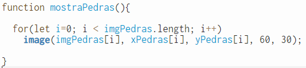
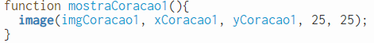

A Movimentação da Espaçonave é feita com o evento de tecla Precionada sendo possivel movimentar a Espaçonave para teclas cima,baixo,esquerda e direita usando
Os Asteroides e Raios se Movimentam para uma direção assim que são criadas fora da tela e continuam se movimentando ate o fim da tela onde ao chegar ao fim são recriadas no outro lado da tela iniciando novamente.
A colisão com Os Asteroides e Raios acontece através da biblioteca JavaScript p5.collide.js
Toda vez que há uma colisão a variável "coração" chega a zero assim levando a tela de fim de jogo
